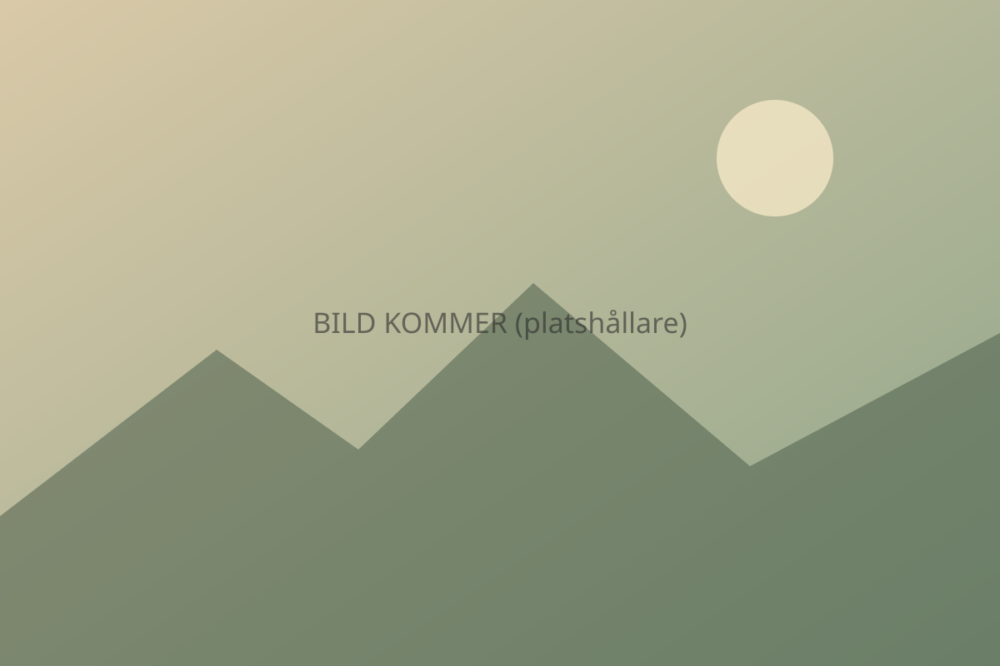

Taffelberget
Stadens landmärke. Berget syns från stora delar av Kapstaden och är ett av de vanligaste utflyktsmålen. Hur du tar dig upp och vilka förhållanden som gäller avgör din rådgivare tillsammans med dig.
Storstad vid havet, vingårdar bland bergen och en kustväg med lagun, skog och strand. Tre delar av Western Cape som passar ihop på en och samma resa.

Stadens landmärke. Berget syns från stora delar av Kapstaden och är ett av de vanligaste utflyktsmålen. Hur du tar dig upp och vilka förhållanden som gäller avgör din rådgivare tillsammans med dig.
En dagsutflykt söderut längs kusten mot Godahoppsudden och Cape Point, ofta med stopp i kustbyar på vägen.
Robben Island är en del av Sydafrikas moderna historia. Besöket kräver förbokning, något vi tar hand om i planeringen.
Vinområdena ligger en bit inåt landet från Kapstaden, bland berg och dalgångar. Många kombinerar dem med några nätter på plats i stället för en hastig dagsutflykt.
Vinprovning och måltider på vingårdar bokas ofta i förväg. Vi lägger in det i förslaget om du vill. Vill du inte dricka vin finns det gott om annat att göra, till exempel promenader, cykling och restauranger.
Kustvägen österut från Western Cape mot Eastern Cape. Här blandas strand, lagun, skog och små städer.
Stad vid en lagun, omgiven av skog. Ett vanligt övernattningsstopp längs vägen.
Kuststad med långa stränder och utflykter till natur och djurliv.
Skog och kustlandskap för den som vill ut och gå eller uppleva naturen.
Sträckorna är långa, så avstånd och körtid är viktiga att planera. Många hyr bil, och i Sydafrika kör man på vänster sida. [ASSUMPTION: Restider och rekommenderade nätter per stopp läggs in av produktansvarig från produktdata]
En vanlig ordning är att börja i Kapstaden, fortsätta till Winelands och sedan följa Garden Route. Du kan också lägga till en safari för att få med djurlivet. Läs mer om våra upplägg:
Det beror på tempo och intressen. Att köra mellan områdena tar tid, så en rådgivare hjälper dig att hitta ett upplägg som inte blir stressigt. Berätta hur lång tid du har så föreslår vi ett upplägg.
Ja, många hyr bil på just den här sträckan. Man kör på vänster sida av vägen. Vi går igenom praktiska råd när du ber om ett förslag.
Ja. Berätta om dina önskemål i formuläret så tar en rådgivare fram ett förslag utan förpliktelser.
Det är helt förutsättningslöst. Du får ett förslag som utgår från dina önskemål.
Vill du hellre prata? Ring oss på [nummer, öppettider].